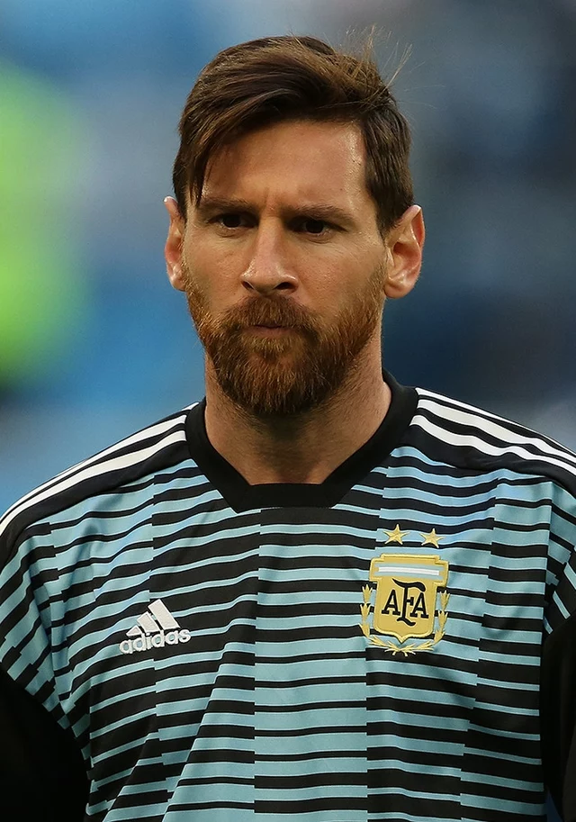

|  |
Lionel MessiPemain Sepak Bola Lionel Andrés Messi juga dikenal sebagai Leo Messi,[5] (lahir 24 Juni 1987) adalah seorang pemain sepak bola profesional asal Argentina yang bermain sebagai penyerang untuk klub Ligue 1 Paris Saint-Germain dan merupakan kapten tim nasional Argentina. Sering dianggap sebagai pemain terbaik di dunia dan sering dianggap sebagai pemain terhebat sepanjang masa,[6][7][8][9] Messi telah memenangkan tujuh penghargaan Ballon d'Or, enam Sepatu Emas Eropa, dan pada tahun 2020 dinobatkan sebagai Ballon d'Or Dream Team. Ia menghabiskan seluruh karier profesionalnya bersama Barcelona, di mana ia memenangkan 34 piala, termasuk sepuluh gelar La Liga, tujuh gelar Copa del Rey dan empat Liga Champions UEFA. |